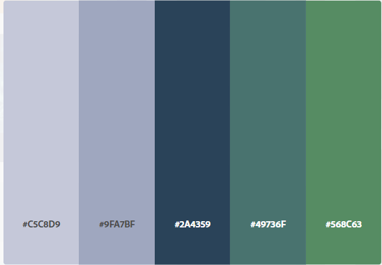

The color scheme will be based on rain and trees, hence, these will be the appropriate palette for the website:
The main color for backgrounds, footer, header, and everything else will be mainly using the main color in the middle section, with hints of the green as the 5th color. The rest will be used for accentuating points as deemed appropriate in the project.